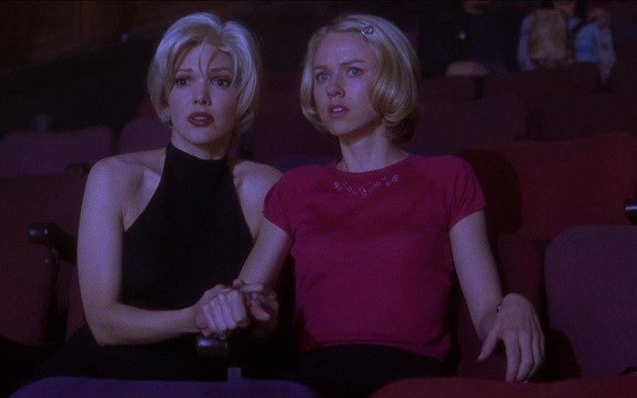
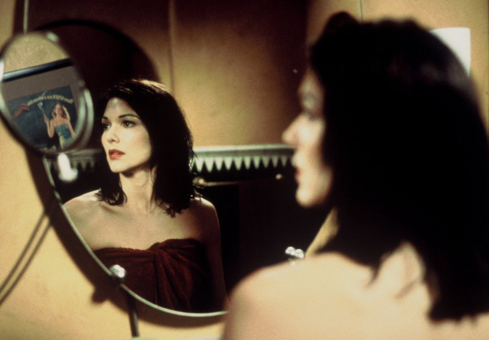

Review phim mulholland drive sắp xếp từng mảnh ghép, từng gợi ý tiếp theo trong câu chuyện để khẳng định cái giả thuyết vào cú twist của phim
Trước khi xem phim Mulholland Drive, gia tài kiến thức của mình về David Lynch chỉ gói gọn trong hai season Twin Peak. Và cho dù đã từng nghe qua The Elephant Man (1980) và Blue Velvet (1986), mình không biết nó là phim của Lynch và cũng không thực sự tự nguyện muốn xem. Muholland Drive chỉ là một trong những phim trong chuyến phiêu lưu nhỏ mọn của mình tới dòng noir và neo-noir, mình đã không trông chờ gì nhiều vào nó. Như một lẽ thông thường, mình chẳng biết gì về cốt truyện của phim, và bản thân mình bị chính cái định dạng neo-noir đó lừa cho một vố ngã ngữa. Muholland Drive không phải phim dòng neo-noir, mặc dù nó có vẻ giống như thế. Nó mang cái dáng dấp và bầu không khí từa tựa Twin Peak, từ kiểu cách đến thái độ, từ tông màu đến diễn xuất quá trớn, từ cái vượt chuẩn lý luận thực tế và ngoài logic thông thường được đặt trong một bộ phim hấp dẫn và gây hoang mang bậc nhất, nó là phim của David Lynch..
Bài viết có tiết lộ nội dung phim Mulholland Drive

Tóm tắt nội dung phim Mulholland Drive
“Thế là chị ơi rụng bông hoa gạo”. Trong một đêm xấu trời tại con đường Muholland Drive, nữ chính số 2 may mắn thoát khỏi bọn sát thủ bằng một vụ tai nạn giao thông tào lao bí đao. Tuy toàn mạng, nữ chính số 2 bị mất trí nhớ, một motif rất chi là Hàn Quốc và lãng mạn kiểu phim yêu đương. Biết motif tào lao, anh đạo diễn cho nữ chính số 2 vô tình được nữ chính số 1 cứu giúp, phim không có nam chính nha.
Nữ chính số 1, Betty Elms (Naomi Watts) cũng là một nhân vật chính có tính cách điển hình trong một drama tình cảm Hàn Quốc thời đại ung thư – mất trí nhớ. Là một diễn viên trẻ từ quê ra phố thị xa hoa, Betty trẻ trung, xinh đẹp, tốt bụng với mơ ước trở nên nổi tiếng (chẳng thế mà em nó ra Hollywood lập nghiệp). Với sự hậu thuẫn của bà cô cũng là một nữ diễn viên đã thành danh, Betty vừa chân ướt chân ráo tới Los Angeles đã có ngay một chỗ để ở, một buổi thử vai để làm bàn đạp, mọi thứ đối với cô quả thật vô cùng hoàn hảo. Nhìn Betty, mọi thứ đều trở nên dễ dàng và sáng sủa một cách lạ thường. Em nó xinh, lương thiện, lạc quan và khiêm tốn, Betty là một người ai cũng muốn nói chuyện và chơi cùng. Với việc mặc định cho một tính cách công chúa như vậy nhưng không hề bánh bèo, Betty gặp gỡ và giúp đỡ nữ chính số 2, Rita (Laura Elena Harring) khi cô này còn đang mơ màng giữa mấy cơn dư chấn sau vụ tai nạn. Như một lẽ tất yếu của bộ phim, hai cô gái trẻ bỏ qua thái độ sống của một công dân liêm chính là nhờ công an và chánh quyền giúp đỡ, cả hai quyết định tự điều tra vụ việc.

Mình đã nghĩ đến trong đầu Muholland Drive gây đột phá cho dòng neo-noir là bởi nó dám chọn hai cô gái yếu nhớt, non nớt và “nhà lành” kia làm cặp duo điều tra phá án, rõ là phong cách thập niên 2000 mới toanh so với mấy ông chú già mặt mũi bí xị trong mấy phim dòng noir trước đó mình xem. Nhưng càng coi thì phim càng đi trật dòng đời xuôi ngược mà sa thẳng vô mấy khúc cua ma quỷ, tâm thần, kỳ ảo, bạo lực và hoàn toàn mất phương hướng, giống y như Twin Peak vậy. Mình không biết có phải tất cả phim của David Lynch có như vậy không, Muholland Drive thì chắc chắn chung sọt với Twin Peak. Tụi nó có cái điểm chung to đùng làm mình vô cùng bối rối và lạc đường mỗi khi xem phim.
Xây dựng tuyến nhân vật kỳ lạ
Khi xuôi theo bộ phim, Muholland Drive bắt đầu tự tung tự tác và bắt đầu tàn phá mọi điều mình biết về cung cách xây dựng bộ phim và nhân vật. Trong một bộ phim mình mặc định là phá án, Mulholland Drive bộc lộ rất nhiều khuyết điểm về logic. Như việc bộ phim đi nửa đường nhưng chưa khám phá ra được cái quỷ gì; số tiền lớn trong túi của Rita lấy từ đâu; hai ông chú thanh tra ở đầu phim được tạo ra nhằm mục đích gì; người đàn ông và giấc mơ trong tiệm ăn nhanh chỉ xuất hiện trong một cảnh rồi lặn mất tăm; cái hộp màu xanh trong túi Betty tự dưng ở đâu mà có,…
Hay như tính cách nhân vật Betty. Betty là một nữ thanh niên tỉnh lẻ chân chất và thực tế là không dạn dày sự đời, cũng chưa từng có kinh nghiệm đóng phim. Thế nhưng khi cô đi thử vai, cô gái trẻ đã đóng một vai diễn phức tạp, cực kỳ, cực kỳ táo bạo, phản đạo đức và nhuốm màu sắc dục một cách trơn tru và thần diệu đến bất ngờ. Mình không nói Betty không tài năng, nhưng để diễn một phân đoạn như thế cần nhiều hơn tài năng và những mặc định trong tính cách và cuộc đời màu hồng của Betty không đủ sức để lý giải cho việc cô diễn đạt đến như vậy. Nó không có hợp lý.
Nhưng một trong điểm choáng váng nhất mà mình hoàn toàn không ngờ tới, đó là sự chuyển hướng yêu đương của nữ chính số 1 và nữ chính số 2. Mình thực sự bị “blindside” trong cái cú twist to đùng này, hoàn toàn bị đánh lừa và không nhận ra bất cứ một dấu hiệu nào cho thấy hai đứa nó có tình ý, hoàn toàn không. Mọi thứ tưởng như vượt ra khỏi motif của một phim anh hùng cứu mỹ nhân thông thường bây giờ lại gộp về motif cũ đó, mỹ nhân cứu mỹ nhân. Giờ hai mỹ nhân tạo cho bộ phim những cảnh nóng hỏng hết hai con ngươi và mình, một con nhãi ngu ngơ, hoàn toàn không biết đây là bộ phim được đóng nhãn R luôn. Mình đã không ngờ đến việc hai em gái thương nhau, càng không ngờ phim có cảnh nóng cháy khét lẹt, quả nhiên là cú lật mặt thế kỷ. Motif cặp đôi phá án yếu nhớt quay trở lại motif cũ, một cặp đôi yêu nhau trong loạn lạc và hiểm nguy. Nói thật thì cũng không được hấp dẫn cho lắm.
Bạn mình có một thuyết âm mưu về Mulholland Drive. Đó là bản thân David Lynch nhận thấy với cái kịch bản mình có, cho dù có trổ hết tài năng lẫy lừng lẫn màn yêu đương lesbian cuồng nhiệt ra thì Mulholland Drive cùng lắm chỉ là một phim neo-noir trung bình không hơn không kém. Thế nên trong 1/3 thời lượng cuối cùng của phim, David Lynch chơi một ván bài thần sầu khi đưa yếu tố siêu nhiên, ma quỷ, tâm linh vào bộ phim, vừa giải quyết được biết bao nhiêu chướng ngại to đùng về lỗi logic, vừa khiến nó vừa đáng nhớ vừa đặc sắc, đậm chất quỷ quyệt của đạo diễn nhà ta.
Mình thấy nó cũng hơi đúng đúng.
Giải thích kết phim Mulholland Drive (2001)
Cái kết của Mulholland Drive thường được giải thích bằng giấc mơ. Dianne Selwyn mơ về một cuộc sống mà cô mong muốn, nơi cô là một diễn viên trẻ triển vọng với bao nhiêu cánh cửa mở ra trước mặt, nơi Rita xinh đẹp yêu và cần cô. Cuộc sống của Betty là cuộc sống mà Dianne mong mỏi có được, khi mà trong thực tế thì cô chỉ là một diễn viên bị trầm cảm với sự nghiệp theo đuôi Camilla Rhodes (người giống y hệt Rita). Sau khi bị Camilla chấm dứt tình cảm, Dianne thuê người sát hại Camilla và vì không thể chịu đựng được tội lỗi của mình, Dianne tự sát.
Nói chứ giải thích bằng giấc mơ như thế thì chịu rồi. Bao nhiêu thứ thực và ảo, người yêu cũ và người yêu mới, những thứ thiếu thực tế hay sai sót bất thường đã kể tội ở trên hoàn toàn bị xóa sạch, bởi đó là một giấc mơ. Giấc mơ thì không cần có lý, những chi tiết nho nhỏ trong giấc mơ và trong đời thực tự dưng trở thành một cầu nối “thiên tài” của anh đạo diễn. Đột nhiên nhân vật được nâng tầm rộng lên với bao nhiêu thâm trầm phức tạp, đau khổ và bế tắc. Thực tế thì khán giả bị đánh lừa bởi chính việc Dianne Selwyn và Betty Elms với hai nhân cách đối lập khiến họ nghĩ rằng nhân vật đặc biệt hơn. Nhưng nếu xét riêng biệt, cả Betty và Dianne đều có tính cách tương đối đơn giản và thường gặp. Dianne thất bại trong tình yêu, sự nghiệp với một thần kinh lung lay như chỉ mành treo chuông và một màn yêu đương – ghen tuông một mất một còn thực tế vốn không phải là điều mình chưa từng xem trong các phim khác. Hay như sự biến chuyển bất ngờ của nhân vật Rita/ Camilla, sự xuất hiện của những nhân vật này trong giấc mơ nay trở thành những con người khác trong đời thực,… tất cả đều được tính toán sao cho khán giả càng lạc lối càng tốt.
Cái hay của ông đạo diễn sỏi đời mà ông biết lựa những chi tiết nào cần để nhấn mạnh. Trong một bộ phim có kết cấu vô cùng phức tạp và gây hoang mang khôn cùng như Mulholland Drive, việc chọn lựa nhân vật, tình tiết và những đồ vật kết nối hai phần hiện thực và giấc mơ sao cho bộ phim rối tinh vẫn hoàn rối tinh nhưng khán giả vẫn định vị rõ ràng những điểm liên kết hai phần lại thực sự không phải là chuyện dễ. Cùng một nhân vật, nếu khung hình dừng thiếu 1 giây, khán giả sẽ chưa kịp nhận ra nhân vật này đã từng xuất hiện ở đâu trước đó, có ý nghĩa như thế nào, mọi thứ sẽ trôi tuột trong tâm trí họ và đương nhiên, mọi thứ ông đạo diễn cài cắm sẽ đổ sông đổ bể. Nhưng nếu khung hình dừng thêm 1 – 2 giây, khán giả sẽ hoài nghi đây là điểm nhấn quan trọng và bỏ qua những chi tiết được cài cắm khác, dẫn tới nhiều giả thuyết kém thuyết phục và khiến bộ phim vô lý hơn mức cần thiết.
Trong Mulholland Drive, mọi thứ vừa đủ và vừa đúng một cách vô cùng chỉnh chu và cân đối trong một kịch bản rối bòng bong không có điểm dừng, điểm cuối hay thậm chí còn không có một câu chuyện đơn thuần để có thể kể lại đàng hoàng.
Thực sự là như vậy. David Lynch tạo ra một bộ phim rối rắm và đáng sợ, vượt ra ngoài quy chuẩn thông thường của bất cứ dòng phim nào mình từng xem. Cái tài tình ở đây là ông cài cắm đủ những yếu tố cần thiết để khán giả tự suy luận và giải thích nội dung phim theo quan điểm của họ mà đạo diễn không cần phải đưa ra một đáp án chuẩn. Nói ai thì mình không rõ, khi mình xem phim, mình đã tự bịa nó về giả thuyết thế giới song song với vòng lặp thời gian cơ. Mình đã nghĩ đến việc Betty sống ở một thế giới song song với thế giới của Dianne, nơi cả hai có hai cuộc đời không thể đối lập nhau hơn và những con người, sự kiện liên quan tới họ có những sự đảo lộn và khác biệt nhất định. Khi Betty “mất tích” trước khi mở chiếc hộp màu xanh, cô biến mất trong thế giới của mình và bắt đầu sống trong thế giới của Dianne với nhân dạng của Dianne, trải qua những gì Dianne làm, thuê sát thủ giết hại Camilla và cuối cùng tự sát vì không chịu đựng nổi tội lỗi của mình. Camilla tuy bị sát thủ tiếp cận nhưng thoát chết trong gang tấc, bị mất trí nhớ và được Betty Elms cứu giúp. Camilla lúc này sẽ lại tự xưng mình là Rita, rồi Betty sẽ yêu cô, cả hai lại tìm được chiếc hộp màu xanh nơi Betty bị hút vào một thế giới khác, thế giới nơi cô là một Dianne trầm cảm, suy sụp đang muốn thuê sát thủ giết người yêu cũ….
Mình không muốn bàn đến sự đúng sai trong giả thuyết của mình hay giả thuyết giấc mơ. Cái mình muốn bàn là mình có một giả thuyết và bất cứ khán giả nào xem phim cũng có một giả thuyết. Trong một tác phẩm thậm chí còn khó tóm tắt, vừa dư thừa, vừa thiếu hụt tình tiết cùng vô vàn yếu tố khác gây xao lãng và tưởng chừng như vô cùng quan trọng khác, Muholland Drive gợi mở được sự tò mò, hấp dẫn cho khán giả, khiến họ tự mình đóng vai Sherlock Holmes để kết nối các dữ kiện với nhau và tự giải toán cho mình. Đó không phải là điều dễ làm được, bởi hầu như mấy phim dám làm điều này đều kết thúc hơi bị tối nghĩa và thường là bị chê lên chê xuống. Yếu tố giải trí, gây shock, siêu nhiên được áp dụng linh hoạt, hiệu quả trong một bộ phim khiến khán giả lên đèo, đổ dốc, chạy bộ, hoảng hốt, ngờ vực, ngơ ngác cùng với từng chi tiết chẳng-hiểu-bới-ở-đâu-ra và chẳng-hiểu-có-dụng-ý-gì của bộ phim một cách vừa tò mò, vừa lo lắng vì nó không giống với mình dự liệu. Đó mới chính là cái tài tình của David Lynch và điểm thú vị nhất của Mulholland Drive.
Đánh giá phim Mulholland Drive
Nếu bảo mình phân tích nội dung, câu chuyện và tính cách nhân vật trong Mulholland Drive, mình thấy rất dư thừa. Bởi nội dung thì được làm cho bí ẩn và hoang đường một cách có chủ ý, kết thúc và diễn dịch của câu chuyện thì được anh đạo diễn tung hỏa mù theo kiểu không có đáp án chính xác và nhân vật thì không có gì đặc sắc để phân tích và làm màu. Chính cha đạo diễn già đời mất dạy còn không thèm giải thích ý nghĩa phim của ảnh, chỉ chú thích một câu xanh rờn về nội dung phim “A love story in a city of dreams”, điều đương nhiên là đúng và ai cũng biết. Thấy nó láo toét chưa? Mình nhận ra bất cứ một tay đạo diễn nào muốn biến phim mình thành kinh điển thì cứ làm cho nó thật hấp dẫn ở giai đoạn đầu và làm rối rắm và biểu tượng ở giai đoạn cuối, xong xuôi thì méo có giải thích gì sất. Cứ thế mà phim sẽ hay ơi là hay. Chứ giờ anh giải thích ra có mà chết, phim nó dở ẹc ngay.
Nói như vậy không có nghĩa mình chê Mulholland Drive. Nó không có chỗ nào để chê cả, thực lòng luôn. Mặc dù đôi chỗ phần diễn xuất còn hơi quá lố và có vẻ hơi “truyền hình” và “kịch” (như đoạn Betty nói chuyện với cặp vợ chồng già sau khi đáp máy bay hoặc đoạn tên sát thủ giết người diệt khẩu), nó được mình chấp nhận một cách thong thả vì bộ phim có cái điệu bộ của Twin Peak, mà Twin Peak có điệu bộ từ mấy cái soap opera mà anh đạo diễn lấy cảm hứng từ nó. Nhưng nếu đã đến phần cần phải diễn cho nghiêm chỉnh, Naomi Watts diễn tới cùng. Đoạn Betty Elms thử vai, đoạn Dianne ghen tuông trong bất mãn, tất cả được Naomi Watts diễn rất chuẩn mực và ra cái màu của nhân vật đến mức ngã ngữa, bởi diễn xuất của cổ tốt quá mức cho một phim giải trí như Mulholland Drive, thật đó, mình đã nghĩ như vậy đó. Cho dù Muholland Drive có nổi tiếng và được đánh giá cao cỡ nào, bản thân mình vẫn nhận thấy bộ phim có một nét rẻ tiền nhất định trong cái cung cách xôi thịt trong các cảnh nóng, trong màn hù ma dọa quỷ tương đối lộ liễu hay những phân đoạn sến và hơi “cải lương” của bộ phim, một trong những nét riêng của soap opera và của Twin Peak. Nó thực sự không phải một phim hàn lâm hay có cái khuôn mẫu chung và cái hơi thở của một phim được coi là thanh lịch và kinh điển, nhưng diễn xuất của Naomi Watts thì có cái sự sang và tinh tế đó. Thành thực mà nói, nếu không có Naomi Watts, bộ phim sẽ tầm thường đi rất rất nhiều, bất chấp nội dung có kỳ lạ và đánh đố hơn nữa.
Sau khi thành thực nhìn nhận Mulholland Drive như những gì nó vốn có, mình nghĩ phim chỉ tầm 7 điểm rưỡi thôi. Dẫu vậy, không thể phủ nhận, trong thời điểm mình xem phim, mình đã rất thích nó. Mình đã hồi hộp chờ từng mảnh ghép, từng gợi ý tiếp theo trong câu chuyện để khẳng định cái giả thuyết của mình là trúng hay trật, mình đã đầu tư vô vàn noron thần kinh vô tội vào cái cú twist của phim cùng kiềm chế cảm xúc “không thể tin được” khi nhìn hai gái đẹp ngất ngây ở trần hôn nhau. Ở Muholland Drive có một sự hấp dẫn không cưỡng lại được khi xem phim, một nồi lẩu thập cẩm vừa miệng có đủ mọi thứ một phim giải trí cần (ma quỷ, cảnh nóng, bí ẩn,…) nhưng được canh chỉnh khác lạ để khiến nó trở nên khôn khéo và đắt đỏ hơn bản chất thực của nó. Bộ phim “lừa đời” của David Lynch vừa có những dấu hiệu của bao nhiêu phim mình từng coi và từng chê bai nhưng khi xét về tổng thể, nó lại là bộ phim lạ lùng và “duy nhất” mình có hân hạnh được biết đến. Và với vốn kiến thức nhỏ mọn của bản thân về điện ảnh, mình chẳng thể tìm được một phim thứ hai tương tự như Muholland Drive, một sự khẳng định cho cái bản thể độc đáo của một bộ phim khác thường nhất mà mình từng xem.